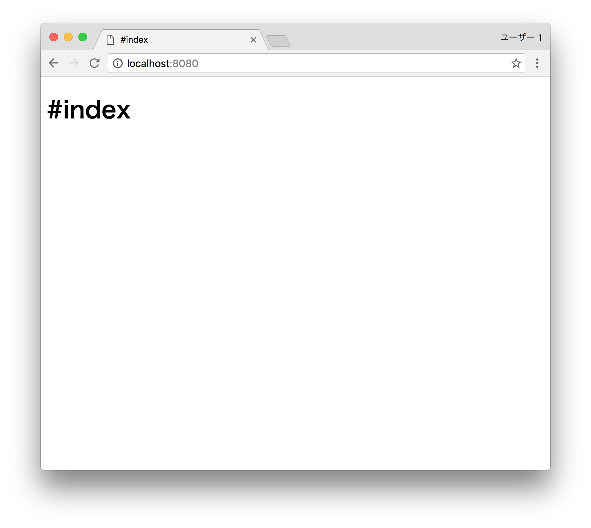

Let's aboard!
Install airlane
You can install the airlane with npm command below.
npm install airlane -g
Generate project
After installing, you can make a project.
cd /path/to/some/where
airlane init hello
cd hello
Airlane generates some files and directory.
$ tree .
.
├── config.js
├── modules
├── package.json
├── routes
│ ├── controller.js
│ ├── index.js
│ ├── public
│ │ ├── app.css
│ │ └── app.js
│ ├── test
│ │ └── controller_test.js
│ └── views
│ ├── edit.jade
│ ├── index.jade
│ ├── layout.jade
│ └── new.jade
└── tmp
6 directories, 11 files
Launch server
Let's launch the server!
npm install
airlane serve
Now, you can access to the web server http://localhost:8080/.

Conglaturations! You were aboarding Airlane!
Next is update view